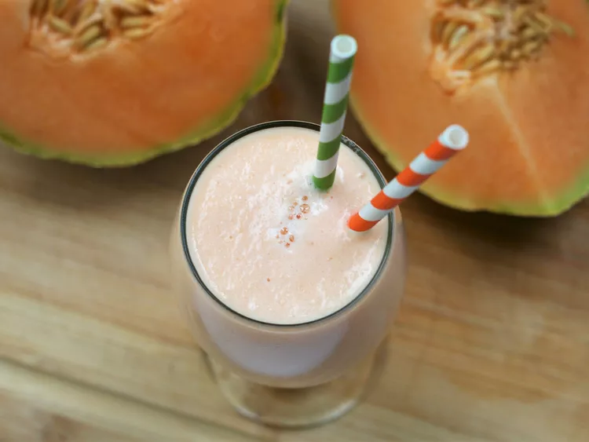

Cantaloupe Frenzy

Ingredients
- 1 cantaloupe - peeled, seeded and cubed
- 3 tablespoons white sugar, or to taste
- 2 cups ice cubes
Steps
- Place cantaloupe cubes and ice into the container of a blender. Process until the ice is in small pieces. Add sugar, and puree. Pour into tall glasses and serve immediately.